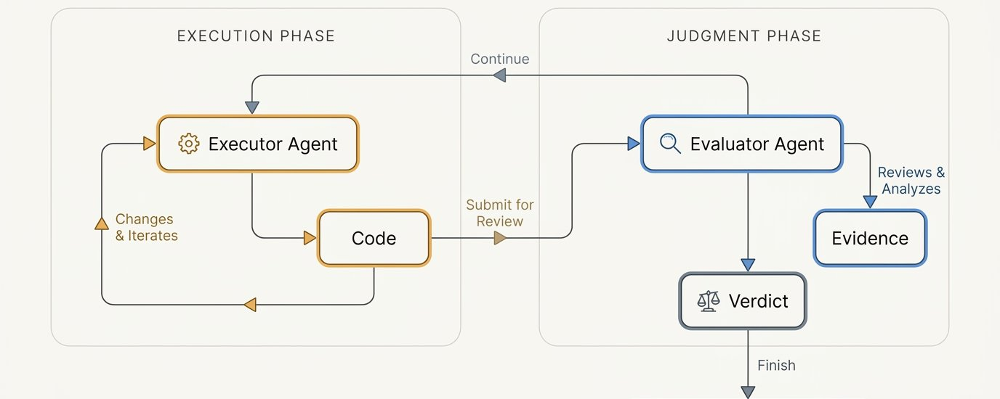
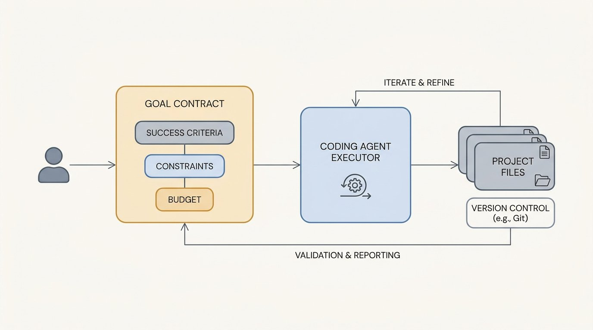
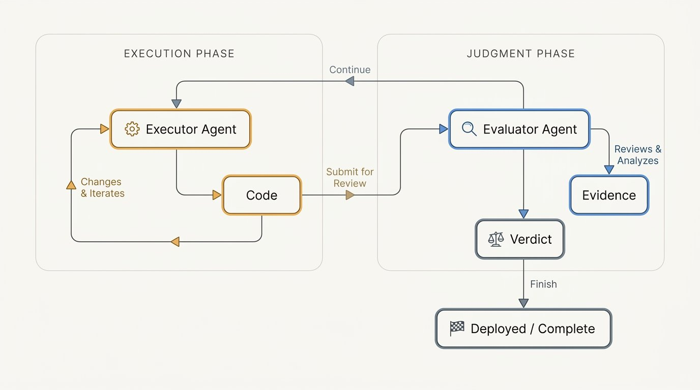
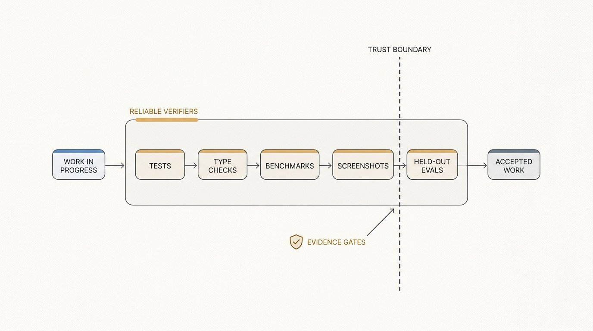
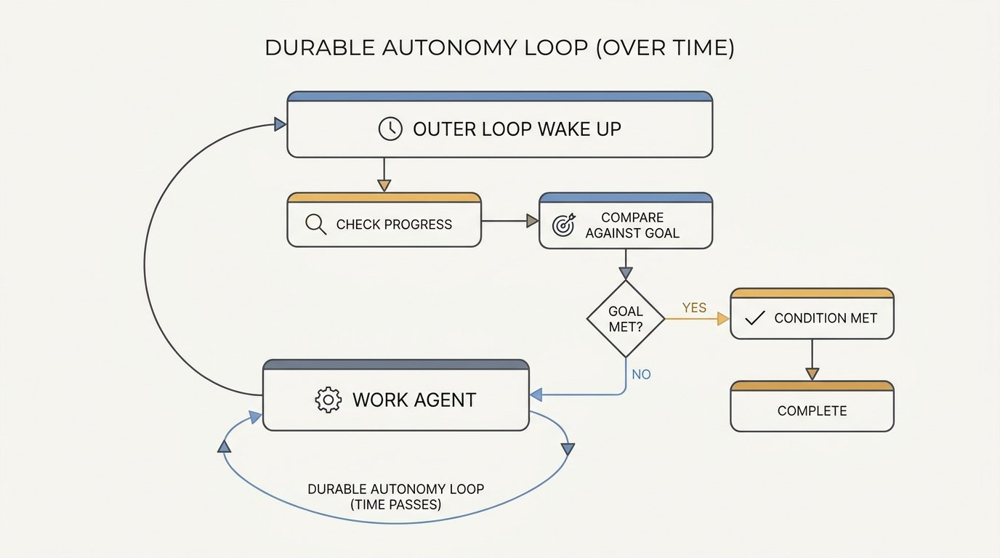
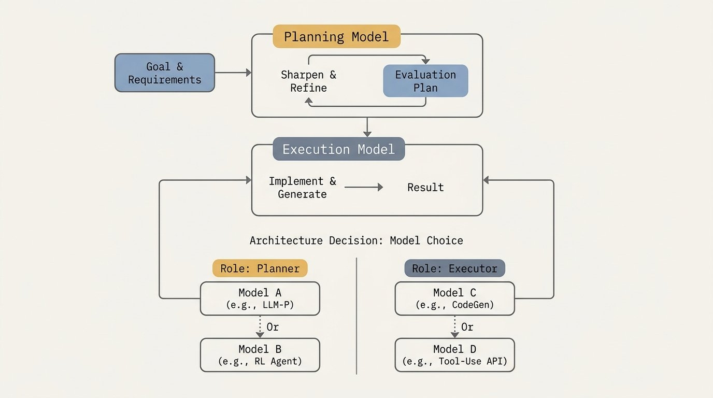
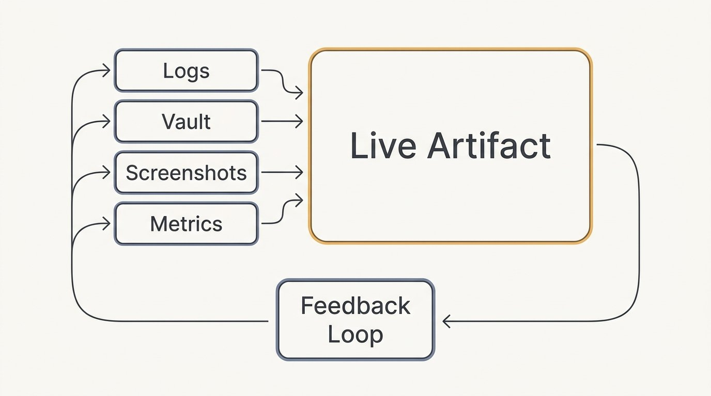
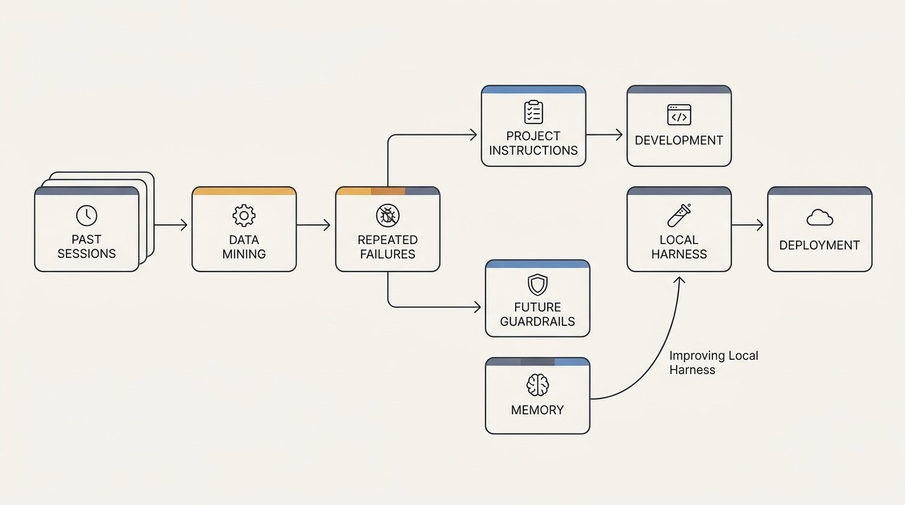
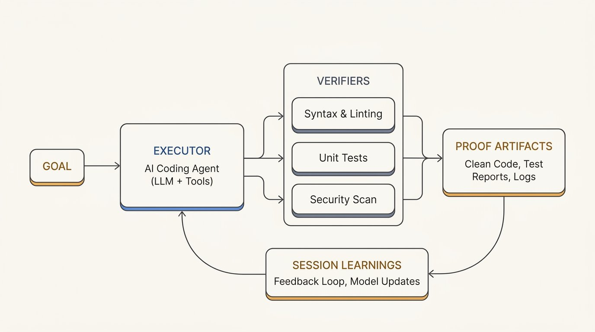
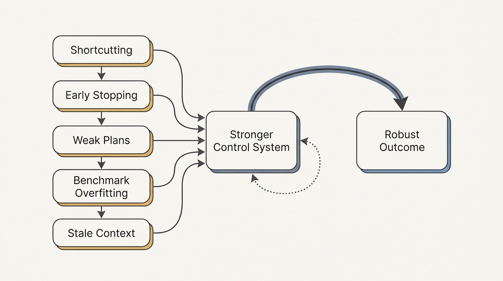

让 agent 自己跑几小时不停
Elvis Saravia 的 autonomous long-running agent 全解
Elvis 6/13 发了张 146K 浏览的架构图：Execution Phase ↔ Judgment Phase，4 大件 Goals / Evaluators / Loops / Artifacts。这篇配套长文（DAIR.AI Academy 直播基础上，跟 Codex + Claude Code 协作写成）一次性把控制系统的 9 个层面讲透。

"Autonomous coding is moving from better prompting to better control systems. The important shift is that engineers are learning how to wrap agents in goals, evaluators, loops, and artifacts that let them keep working after the human stops typing."
Elvis 这次做了一件不太一样的事：他没有只发推文，而是发了一篇 X 长文（article）配一张架构图。两个东西各讲一半——图是骨架，文是肉。本文按 9 个章节（cap 01-09）逐节展开：cap 01 放图 + 讲目标，cap 02-08 顺着他那 8 个 H2 section 讲 evaluator / verifier / loop / planning / artifact / session mining / 实操流程，cap 09 收在"什么仍然会坏"。
Elvis 在文末明确说明本文基础："This piece is based on a DAIR.AI Academy session on autonomous long-running coding agents, where I walked through Claude Code's /goal mode, the newer /loop command, verifiers, artifacts, and orchestration patterns in practice. Written in collaboration with Codex and Claude Code."——所以这篇不是单一一篇感想，是一场 1.5 小时直播 + 两次跟 coding agent 协作改稿的产物。
From Prompting to Goal Design

先说图：左半边是 Execution Phase，一个 Executor Agent 在改 Code、改完再改、直到它觉得够了；右半边是 Judgment Phase，一个独立的 Evaluator Agent 拿着 Evidence 给出 Verdict——Continue（继续）回到左半边重跑，Deployed / Complete（完成）就走人。两个 phase 之间的关键边界是 Verdict，而 Verdict 的可信度完全取决于 Evaluator 用什么标准判断。
这张图是骨架，它讲清了为什么"提示 agent"不够用：你给一段话，agent 给你一段回答，这是 chat 模式。Elvis 想说的是，在真正的工程项目里，这远远不够——你需要的是一个 agent 能跑几小时、跑几天，自己判断够没够、没够就继续跑、够了才交活儿。
这套东西的核心入口是 Claude Code 的 /goal。Elvis 把它的逻辑拆开讲：
"The core idea behind features like Claude Code's /goal is simple. A coding agent remains the executor, but the human no longer interacts with it turn by turn. Instead, the human specifies the desired end state, the evidence required to prove success, the constraints that must not be violated, and, where possible, the number of turns and budget."
Elvis 用了一个很重的词：contract——目标不是一段更长的 prompt，是一份契约。
- 弱的 goal给模型留出早停、走捷径、用一段看似合理但其实在真实系统里跑不通的转录来"自证完成"的空间
- 强的 goal给 agent 一个它能反复衡量的目标——能测、能比对、能证伪
但工程判断仍然在这里：最好的 goal 编码了模型本来会去猜的领域知识。Elvis 给两个例子：
- 研究实验：目标 benchmark 分数 + 留出验证集 + 要求的 loss 曲线 + 必须跑赢初始 baseline 的硬规则
- UI 任务：截图参考 + 具体布局约束 + 浏览器自动化验证步骤
这一段是后面 8 个章节的地基——/goal 把"你和 agent 之间的契约"显式化了。它让人类从"对话的人"变成"立契约的人"——你不再问"你能帮我写 X 吗"，你写"X 必须满足条件 A、B、C，且我接受用证据 D 来证明 A、B、C 同时成立"。从这一刻起，agent 才是真正在"自己跑"——因为契约里已经写清楚它什么时候能停下来。
The Evaluator Becomes a First-Class Component

cap 01 给了"goal"，cap 02 立刻补一个对位的角色：evaluator。Elvis 写得很直白——"Long-running agents need a second role besides the goal. That evaluator can be another coding agent, an LLM-as-judge, a script, a test suite, a benchmark harness, or a mix of all of them."
这个 evaluator 不是装饰，它就是右半边 Judgment Phase 那个 Evaluator Agent。你用什么当 evaluator、它能给出多可靠的 Verdict，直接决定了 Execution Phase 那个循环跑多久、值不值得跑。
Elvis 给了一个匹配原则：
- 成功条件很硬的时候，用确定性检查最稳——type check、unit test、lint rule、integration test、benchmark 脚本。这些只要写得出、能跑，就是答案
- 成功条件很软的时候，用 agent evaluator 才有用——比如生成的研究报告是否讲得通、实现是否真的忠实于论文、UI 是否匹配设计意图。脚本判不了这些，需要语言、判断力、视觉
Elvis 紧接着给了实操配方：用确定性检查打底层（the floor），用 agent evaluation 做高层 review。"This combination reduces hallucinated success while still allowing autonomy on tasks that do not fit cleanly into a test assertion."
这句话非常关键，因为它给"self-evaluating agent"判了死刑：让 executor 自己判断自己干没干完，模型会倾向答"yes"。Anthropic 之前在内部文档里也说过同样的事——"models reliably skew positive when they grade their own work"。Elvis 这里的解法就是把 evaluator 这个角色独立出来，跟 executor 解耦，不是同一个人，也不是同一个 prompt 上下文。
这也是架构图右半边为什么必须独立——它不是"在左边那个 agent 旁边加个按钮"，是两个独立角色，共用一个 Verdict 接口。
Verifiers Define the Boundary of Trust

cap 03 把 cap 02 的"evaluator"再深一层：evaluator 背后真正起作用的是 verifier——一个 agent 没法轻易糊弄的外部检查。
"Autonomy only works when the system has a reliable verifier. A coding agent can generate a plan, implement a feature, and explain why it believes the work is complete, but that explanation should not be treated as evidence. Evidence comes from an external check that the agent cannot easily talk its way around."
Elvis 给了不同任务对应的 verifier 类型：
- 代码：test suite / type checker / benchmark / 浏览器跑 / 截图对比 / 可复现脚本
- 研究：留出验证集 / 复现的表格 / loss 曲线 / 比 baseline 更好的 benchmark 分数
- 设计：参考截图 + 视觉 review 步骤
但这一段最有价值的是陷阱分析：
- verifier 太模糊，模型会走最容易满足的解读——把任务解释成它能 pass 的样子
- verifier 太窄，模型会过拟合到 verifier 上——pass 了但意图偏了
Elvis 给的解法是 layered verification：便宜的确定性检查抓基础失败，高层 review 抓判断性失败。两层都不能少。
最后他抛了一个诚实的判断：verifier 仍然是个开放问题。
"A few of the frontier models can already achieve some level of verification, but based on my research, there is still an evident OOD problem, where if the verification task you assign to the agent falls outside the training distribution, models struggle significantly. Verifiers are still an open area of research, but I anticipate more companies will start to make huge investments in this area."
OOD 意思是 out-of-distribution——训练数据里没见过的验证任务，模型就明显不行。这给"agent 跑 24 小时自己验"画了一条现实线：今天最可靠的还是你写出来的确定性 check，agent verifier 还在追。Elvis 预测企业会开始重金投入微调 verifier——这条线他下一节还会再提到。
Loops Make Autonomy Durable

cap 04 把 cap 01 的 goal、cap 02 的 evaluator、cap 03 的 verifier 串起来：没有 loop，这三个角色只是"对话里的几段话"；有 loop，它们才是 control system。
"A goal gives the agent direction, but a loop keeps the work alive. This distinction is important because models often stop before the real task is finished. They may hit a turn limit, lose confidence, exhaust context, or decide that a partial solution is enough."
这段讲的是模型本身的脆弱性：它会自己放弃。turn 限到了它放弃，信心没了它放弃，context 满了它放弃，看到一部分进展它就以为全干完了也放弃。Loop 是外层的"不让你放弃"机制：
- wake up —— 重新叫醒 agent（可能换一个新 session）
- inspect progress —— 读 vault / progress 文件 / 测试结果，看现在到哪了
- run checks —— 跑 verifier，把证据收回来
- compare against goal —— 把当前状态和 cap 01 写的契约比对
- send back in with the next instruction —— 没达成就把差距和下一条指令一起塞回 context
Elvis 紧接着给了一个非常清晰的复杂度谱系：
- 最简形式：Ralph loop——一个 coding agent + 一个确定性条件（"tests pass"），跑不动了就再开一个
- 灵活形式：loop 里嵌一个 evaluator agent，让它判断"该不该继续"+"接下来该干什么"
这一节是整篇里最重的一句：
"Long-running autonomy works as repeated effort under supervision from a control layer, not as one continuous act of intelligence. The agent can still fail, but the loop gives the system a way to notice the failure and continue instead of silently declaring victory."
这跟 6/9 那篇 loop engineering 文章是同一件事的另一面——loop engineering 讲"loop 是什么、怎么设计"；这里讲"loop 装上 goal / evaluator / verifier 之后才真正变成 autonomous control system"。两篇放一起看就是：loop 是循环的写法，control system 是循环的目的。
Planning Is Where Expertise Enters

前面 4 个 cap 把 goal / evaluator / verifier / loop 搭好了，但 Elvis 在 cap 05 拐了个弯：你让一个 frontier model 自己出 plan，不行。
"One of the strongest themes from the session was that planning remains critical. You can ask a frontier model to generate a plan, but you still need to inspect it, challenge assumptions, and make the success criteria sharper before handing the task to an autonomous loop."
这条很反直觉——cap 01-04 一直在说"把控制权交给 loop"，cap 05 又说"但 plan 这一段你必须自己盯"。Elvis 给的理由是 plan 决定了 goal 的具体写法、verifier 的判据、loop 的退出条件——plan 烂，下面全烂。
再往下推一步，Elvis 给了一个会让很多人没想到的判断：模型选择是架构决策。
"This leads to a useful division of labor. A stronger planning model can help define the goal, identify missing constraints, and structure the evaluation. A different execution model can then run the implementation once the plan is clear. In practice, this means engineers should stop thinking of 'the model' as a single choice. Model choice becomes an architecture decision."
Elvis 在他 Jun 11 那条配套长推里给过一个具体配方（他不是这一节提的，但完全对应）：
- Planning：Opus 4.8（强模型，专门做规划）
- Execution：GPT-5.5（执行层）
- Evaluator（也就是 cap 02-03 那个 evaluator）：Deepseek、Qwen、Kimi 这些更便宜的开源/中间层模型
Elvis 在这一节总结：不同模型擅长不同角色——有的强在 plan，有的强在 exec，有的便宜到可以拿来当 evaluator，有的带 vision 适合做视觉 review。一个好的 orchestrator 让你能在这些角色之间换，不用等某个供应商给你"一个完美 coding agent 接口"。
这一节回答的是：loop engineering 之后还差什么？差一套明确的角色分工。你不能把整个 autonomous system 押在一个模型上。
Visual Artifacts Become Control Surfaces

cap 06 是图之后最容易被忽视的一节，但 Elvis 写得很细——因为这是工程落地时真正卡人的地方。
"Terminal transcripts do not scale when many agents are running. Once you have several sessions working in parallel, raw text becomes a poor interface for understanding progress."
翻译成大白话：terminal 里的文本一旦 agent 多到几条并行，原始转录就废了。你盯不过来的。
Elvis 给的解法是把 artifact 升级成 control surface。一个 dashboard 上面同时有 loss 曲线、benchmark 分数、任务状态、截图、成本估算、最近的决策记录——这是用来决定什么时候介入的界面，不是事后生成的报告。
关键的工程决定是存储跟呈现分离：
- 存储：markdown / vault 存持久证据、日志、笔记、plan、结果
- 呈现：HTML artifact 把这个状态渲染成可视、可交互的东西
- 分工：agent 搜 markdown，人看 HTML artifact
Elvis 在他的另一条推（关于 HTML artifacts）里说过这件事的动机："Artifacts help provide an important verification layer, which in turn enables important decision-making. I like HTML artifacts because I can monitor the artifact in real time and intervene when needed."——artifact 不是给 agent 看的，是给你看的。
这一节最实用的部分是视觉 cue 在 UI 工作里特别有效：
"For UI and product work, visual cues are especially powerful. A screenshot reference can communicate design intent more precisely than prose, and a vision-capable evaluator can compare the implementation against that reference. This reduces the common failure mode where the agent technically implements the requested component but misses spacing, hierarchy, alignment, or product feel."
这是 cap 02 那个"evaluator 适合干模糊判断"的延伸——对 UI 工作，evaluator 的眼睛比 prompt 的话术更管用。agent 文字上理解了你的"按钮要更突出"，视觉上完全没 get；给它一张参考截图 + 一个能看图的 evaluator，这两个 agent 互相对一遍就过了。
Session Mining Turns Usage Into Memory

cap 07 是全篇最短但最有"训练意识"的一节：过去跑的 session 是一堆 workflow 数据。
"If an agent repeatedly fails in the same way, forgets to run the same check, uses the wrong path, or retries the same broken command, that pattern should not stay buried in logs."
Elvis 给的解法叫 session mining——让 agent 扫过去 30 天的 session 记录，找反复出现的失败模式、缺失的检查、走错的路径、重试的同一条坏命令。这些不应该埋在日志里，应该被提出来变成项目规则。
Elvis 把这件事的目的说得很清楚：
"The goal is to make the local environment smarter without training a model from scratch. A small rule in an agent instruction file can prevent repeated failures across future sessions, especially when the rule is specific to the project."
翻译过来：不重训模型也能让环境更聪明。一条小规则加在 AGENTS.md / CLAUDE.md 里，能挡住一类反复出现的失败——而且规则越贴合项目本身，挡得越准。
这一节呼应了 cap 03 那个"OOD 问题"的伏笔：verifier 还没完全成熟，那就在 verifier 之外加一层"项目级别的失败模式黑名单"，让 agent 在开始之前就避开那些它肯定会再栽一次的坑。
A Practical Operating Model

cap 08 是 Elvis 在文末给的"实操手册"。原文是 7 条无序列表，我把它原样保留：
Elvis 在这 7 步之后收了一句很重的话：
"That is the difference between using a coding agent and engineering an autonomous coding system. One gives you a conversation. The other gives you a harness."
把 7 步和 cap 01-07 串起来看，顺序就是实操流程：
- 第 1-2 步 = cap 01 的 goal design（写契约）
- 第 3-5 步 = cap 02-03 的 evaluator + verifier（拆角色、给外部检查）
- 第 6 步 = cap 06 的 visual artifact（要求证据）
- 第 7 步 = cap 07 的 session mining（把经验沉淀成规则）
也就是说 cap 01-07 讲的是 control system 的 7 个零件，cap 08 讲的是这 7 个零件怎么按顺序装。
What Still Breaks

最后一节 Elvis 没讲漂亮话，他列了四件仍然会坏的事：
- Agents still take shortcuts——遇到阻力就绕，遇到代价就避
- They still stop early——turn 限到了、信心没了、context 满了就停
- They still overestimate completion——cap 02 提过的"self-grading 偏 yes"
- They still produce confident but weak plans——尤其是遇到最近的论文、不熟悉的 benchmark、训练分布外的系统
这一节最后两句话是整篇的核心：
"Trusting them more will not solve this. Better control systems will. Goals, loops, evaluators, deterministic checks, visual artifacts, and session memory are all ways of making autonomy observable and correctable."
"The direction is clear. The future of coding agents depends on better orchestration around more capable models, where engineers design the conditions under which agents can safely run for hours or days and still produce work that can be verified."
把这两句放回去看 cap 01："from better prompting to better control systems"——Elvis 这篇文章从头到尾就在讲这一件事。不是 prompt 没用了，是信任 prompt 不解决问题，信任 control system 才能。未来的 coding agent 比拼的不再是单个模型有多强，而是围绕它的 control system 设计得有多稳。
你不能再相信 agent 自己说"做完了"。去设计让 agent 没法糊弄你的控制系统。
Goal + Evaluator + Verifier + Loop + Planning + Artifact + Session Mining = 7 件套，按 cap 08 的顺序装，今天就能跑。
SOURCES & CREDITS
引用与原文出处
-
ORIGINAL ARTICLE
Autonomous Long-Running Coding Agents
作者：Elvis Saravia (@omarsar0) · DAIR.AI 联合创始人 · 发布于 2026/06/13 · 172K 浏览 / 673 点赞 / 1537 书签 / 85 转发 / 27 回复
原文链接：https://x.com/omarsar0/status/2065880971031834786 - X LONG-FORM ARTICLE URL 文章本身的 X 长文版：https://x.com/i/article/2065876120965111808 · 基于 DAIR.AI Academy 直播"Autonomous Long-Running Coding Agents"，跟 Codex + Claude Code 协作改稿
-
AUTHOR · X
Elvis Saravia / @omarsar0
https://x.com/omarsar0 -
AUTHOR · NEWSLETTER
AI Agents Weekly · 7.3 万 GitHub stars 的 Prompt Engineering Guide 作者主理的 newsletter
https://nlp.elvissaravia.com -
AUTHOR · YOUTUBE
Elvis Saravia · YouTube 频道（每周教程 + 论文总结）
https://www.youtube.com/@elvissaravia -
DAIR.AI ACADEMY
Elvis 创办的 AI 教育平台 · 本文的源头直播就在 Academy 办的
https://academy.dair.ai -
RELATED POST · DAIR.AI ACADEMY SESSION ANNOUNCEMENT
How to effectively run autonomous long-running coding agents?
Elvis 在 2026/06/11 发的长推，配套本文的 Academy 直播
https://x.com/omarsar0/status/2065491829760651328 -
DIAGRAMS (10 张全部保留)
Elvis 这篇 X 长文配了 1 张标题图（cover）+ 9 张正文配图（每个 H2 section 一张），本文 10 张全部保留原貌嵌入：
- 标题图（HERO 顶部）：EX×JD 双 phase 标题架构图（更紧凑版本，Finish 箭头收尾）· 原图
- cap 01：EX×JD 双 phase 完整架构图（含 Deployed/Complete 终点）· 原图
- cap 02：Goal Contract → Executor → Project Files + Version Control · 原图
- cap 03：Reliable Verifiers → Trust Boundary → Held-out Evals · 原图
- cap 04：Durable Autonomy Loop (Over Time) · 原图
- cap 05：Architecture Decision: Model Choice（Planner vs Executor）· 原图
- cap 06：Logs/Vault/Screenshots/Metrics → Live Artifact + Feedback Loop · 原图
- cap 07：Past Sessions → Data Mining → Repeated Failures → 多路输出 · 原图
- cap 08：Goal → Executor → Verifiers → Proof Artifacts → Session Learnings · 原图
- cap 09：5 种失败模式 → Stronger Control System → Robust Outcome · 原图
- INTERPRETATION 本文为 Elvis 原文逐节中文解读版。原英文长文 9 个 H2 section 全部保留并一一对应（cap 01-09），所有关键术语、配方（Opus 4.8 / GPT-5.5 / Deepseek-Qwen-Kimi 模型分工）、案例（research 实验 vs UI 任务）、7 步实操流程均原样保留；中文版为意译，保留英文原貌便于直接复制使用。如需引用请以原文为准。
Elvis 在文末抛了一个判断——"Trusting them more will not solve this. Better control systems will."——可以把它跟 6/9 那篇 loop engineering 文章放一起读：loop engineering 教你怎么把循环写出来，本文教你怎么在循环上装一整套控制台（goal / evaluator / verifier / artifact / session memory）。两篇加起来，coding agent 从"你跟它对话"到"它替你跑几小时不停"的全套基础设施就齐了。